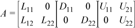

Intel® oneAPI Math Kernel Library Developer Reference - Fortran
Calculates the solution of a set of sparse linear equations with single or multiple right-hand sides.
call pardiso (pt, maxfct, mnum, mtype, phase, n, a, ia, ja, perm, nrhs, iparm, msglvl, b, x, error)
The routine pardiso calculates the solution of a set of sparse linear equations
A*X = Bwith single or multiple right-hand sides, using a parallel LU, LDL, or LLT factorization, where A is an n-by-n matrix, and X and B are n-by-nrhs vectors or matrices.
This routine supports the Progress Routine feature. See Progress Function for details. The case of iparm(24)=10 does not support this feature.
Optimization Notice |
|---|
Intel's compilers may or may not optimize to the same degree for non-Intel microprocessors for optimizations that are not unique to Intel microprocessors. These optimizations include SSE2, SSE3, and SSSE3 instruction sets and other optimizations. Intel does not guarantee the availability, functionality, or effectiveness of any optimization on microprocessors not manufactured by Intel. Microprocessor-dependent optimizations in this product are intended for use with Intel microprocessors. Certain optimizations not specific to Intel microarchitecture are reserved for Intel microprocessors. Please refer to the applicable product User and Reference Guides for more information regarding the specific instruction sets covered by this notice. Notice revision #20110804 |
The types given for parameters in this section are specified in FORTRAN 77 notation. See Intel MKL PARDISO Parameters in Tabular Formfor detailed description of types of Intel® oneAPI Math Kernel Library PARDISO parameters in Fortran 90 notation.
INTEGER for 32-bit or 64-bit architectures
INTEGER*8 for 64-bit architectures
Array with size of 64.
Handle to internal data structure. The entries must be set to zero prior to the first call to pardiso. Unique for factorization.
After the first call to pardiso do not directly modify pt, as that could cause a serious memory leak.
Use the pardiso_handle_store or pardiso_handle_store_64 routine to store the content of pt to a file. Restore the contents of pt from the file using pardiso_handle_restore or pardiso_handle_restore_64. Use pardiso_handle_store and pardiso_handle_restore with pardiso, and pardiso_handle_store_64 and pardiso_handle_restore_64 with pardiso_64.
INTEGER
Maximum number of factors with identical sparsity structure that must be kept in memory at the same time. In most applications this value is equal to 1. It is possible to store several different factorizations with the same nonzero structure at the same time in the internal data structure management of the solver.
pardiso can process several matrices with an identical matrix sparsity pattern and it can store the factors of these matrices at the same time. Matrices with a different sparsity structure can be kept in memory with different memory address pointers pt.
INTEGER
Indicates the actual matrix for the solution phase. With this scalar you can define which matrix to factorize. The value must be: 1 ≤mnum≤maxfct.
In most applications this value is 1.
INTEGER
Defines the matrix type, which influences the pivoting method. The Intel® oneAPI Math Kernel Library PARDISO solver supports the following matrices:
real and structurally symmetric
real and symmetric positive definite
real and symmetric indefinite
complex and structurally symmetric
complex and Hermitian positive definite
complex and Hermitian indefinite
complex and symmetric
real and nonsymmetric
complex and nonsymmetric
INTEGER
Controls the execution of the solver. Usually it is a two- or three-digit integer. The first digit indicates the starting phase of execution and the second digit indicates the ending phase. Intel® oneAPI Math Kernel Library PARDISO has the following phases of execution:
Phase 1: Fill-reduction analysis and symbolic factorization
Phase 2: Numerical factorization
Phase 3: Forward and Backward solve including optional iterative refinement
This phase can be divided into two or three separate substitutions: forward, backward, and diagonal (see Separate Forward and Backward Substitution).
Memory release phase (phase= 0 or phase= -1)
If a previous call to the routine has computed information from previous phases, execution may start at any phase. The phase parameter can have the following values:
Analysis
Analysis, numerical factorization
Analysis, numerical factorization, solve, iterative refinement
Numerical factorization
Numerical factorization, solve, iterative refinement
Solve, iterative refinement
like phase=33, but only forward substitution
like phase=33, but only diagonal substitution (if available)
like phase=33, but only backward substitution
Release internal memory for L and U matrix number mnum
Release all internal memory for all matrices
If iparm(36) = 0, phases 331, 332, and 333 perform this decomposition:

If iparm(36) = 2, phases 331, 332, and 333 perform a different decomposition:
You can supply a custom implementation for phase 332 instead of calling pardiso. For example, it can be implemented with dense LAPACK functionality. Custom implementation also allows you to substitute the matrix S with your own.
For very large Schur complement matrices use LAPACK functionality to compute the Schur complement vector instead of the Intel® oneAPI Math Kernel Library PARDISO phase 332 implementation.
INTEGER
Number of equations in the sparse linear systems of equations A*X = B. Constraint: n > 0.
DOUBLE PRECISION - for real types of matrices (mtype=1, 2, -2 and 11) and for double precision Intel® oneAPI Math Kernel Library PARDISO (iparm(28)=0)
REAL - for real types of matrices (mtype=1, 2, -2 and 11) and for single precision Intel® oneAPI Math Kernel Library PARDISO (iparm(28)=1)
DOUBLE COMPLEX - for complex types of matrices (mtype=3, 6, 13, 14 and -4) and for double precision Intel® oneAPI Math Kernel Library PARDISO (iparm(28)=0)
COMPLEX - for complex types of matrices (mtype=3, 6, 13, 14 and -4) and for single precision Intel® oneAPI Math Kernel Library PARDISO (iparm(28)=1)
Array. Contains the non-zero elements of the coefficient matrix A corresponding to the indices in ja. The coefficient matrix can be either real or complex. The matrix must be stored in the three-array variant of the compressed sparse row (CSR3) or in the three-array variant of the block compressed sparse row (BSR3) format, and the matrix must be stored with increasing values of ja for each row.
For CSR3 format, the size of a is the same as that of ja. Refer to the values array description in Three Array Variation of CSR Format for more details.
For BSR3 format the size of a is the size of ja multiplied by the square of the block size. Refer to the values array description in Three Array Variation of BSR Format for more details.
If you set iparm(37)to a negative value, Intel® oneAPI Math Kernel Library PARDISO converts the data from CSR3 format to an internal variable BSR (VBSR) format. SeeSparse Data Storage.
INTEGER
Array, size (n+1).
For CSR3 format, ia(i) (i≤n) points to the first column index of row i in the array ja. That is, ia(i) gives the index of the element in array a that contains the first non-zero element from row i of A. The last element ia(n+1) is taken to be equal to the number of non-zero elements in A, plus one. Refer to rowIndex array description in Three Array Variation of CSR Format for more details.
For BSR3 format, ia(i) (i≤n) points to the first column index of row i in the array ja. That is, ia(i) gives the index of the element in array a that contains the first non-zero block from row i of A. The last element ia(n+1) is taken to be equal to the number of non-zero blcoks in A, plus one. Refer to rowIndex array description in Three Array Variation of BSR Format for more details.
The array ia is accessed in all phases of the solution process.
Indexing of ia is one-based by default, but it can be changed to zero-based by setting the appropriate value to the parameter iparm(35).
INTEGER
For CSR3 format, array ja contains column indices of the sparse matrix A. It is important that the indices are in increasing order per row. For structurally symmetric matrices it is assumed that all diagonal elements are stored (even if they are zeros) in the list of non-zero elements in a and ja. For symmetric matrices, the solver needs only the upper triangular part of the system as is shown for columns array in Three Array Variation of CSR Format.
For BSR3 format, array ja contains column indices of the sparse matrix A. It is important that the indices are in increasing order per row. For structurally symmetric matrices it is assumed that all diagonal blocks are stored (even if they are zeros) in the list of non-zero blocks in a and ja. For symmetric matrices, the solver needs only the upper triangular part of the system as is shown for columns array in Three Array Variation of BSR Format.
The array ja is accessed in all phases of the solution process.
Indexing of ja is one-based by default, but it can be changed to zero-based by setting the appropriate value to the parameter iparm(35).
INTEGER
Array, size (n). Depending on the value of iparm(5) and iparm(31), holds the permutation vector of size n, specifies elements used for computing a partial solution, or specifies differing values of the input matrices for low rank update.
If iparm(5) = 1, iparm(31) = 0, and iparm(36) = 0, perm specifies the fill-in reducing ordering to the solver. Let A be the original matrix and C = P*A*PT be the permuted matrix. Row (column) i of C is the perm(i) row (column) of A. The array perm is also used to return the permutation vector calculated during fill-in reducing ordering stage.
Be aware that setting iparm(5) = 1 prevents use of a parallel algorithm for the solve step.
If iparm(5) = 2, iparm(31) = 0, and iparm(36) = 0, the permutation vector computed in phase 11 is returned in the perm array.
If iparm(5) = 0, iparm(31) > 0, and iparm(36) = 0, perm specifies elements of the right-hand side to use or of the solution to compute for a partial solution.
If iparm(5) = 0, iparm(31) = 0, and iparm(36) > 0, perm specifies elements for a Schur complement.
If iparm(39) = 1, perm specifies values that differ in A for low rank update (see Low Rank Update). The size of the array must be at least 2*ndiff + 1, where ndiff is the number of values of A that are different. The values of perm should be:
perm = {ndiff, row_index1, column_index1, row_index2, column_index2, ...., row_index_ndiff, column_index_ndiff}where row_index_m and column_index_m are the row and column indices of the m-th differing non-zero value in matrix A. The row and column index pairs can be in any order, but must use zero-based indexing regardless of the value of iparm(35).
See iparm(5), iparm(31), and iparm(39) for more details.
Indexing of perm is one-based by default, but unless iparm(39) = 1 it can be changed to zero-based by setting the appropriate value to the parameter iparm(35).
INTEGER
Number of right-hand sides that need to be solved for.
INTEGER
Array, size (64). This array is used to pass various parameters to Intel® oneAPI Math Kernel Library PARDISO and to return some useful information after execution of the solver.
See pardiso iparm Parameter for more details about the iparm parameters.
INTEGER
Message level information. If msglvl = 0 then pardiso generates no output, if msglvl = 1 the solver prints statistical information to the screen.
DOUBLE PRECISION - for real types of matrices (mtype=1, 2, -2 and 11) and for double precision Intel® oneAPI Math Kernel Library PARDISO (iparm(28)=0)
REAL - for real types of matrices (mtype=1, 2, -2 and 11) and for single precision Intel® oneAPI Math Kernel Library PARDISO (iparm(28)=1)
DOUBLE COMPLEX - for complex types of matrices (mtype=3, 6, 13, 14 and -4) and for double precision Intel® oneAPI Math Kernel Library PARDISO (iparm(28)=0)
COMPLEX - for complex types of matrices (mtype=3, 6, 13, 14 and -4) and for single precision Intel® oneAPI Math Kernel Library PARDISO (iparm(28)=1)
Array, size (n, nrhs). On entry, contains the right-hand side vector/matrix B, which is placed in memory contiguously. The b(i+(k-1)×nrhs) element must hold the i-th component of k-th right-hand side vector. Note that b is only accessed in the solution phase.
(See also Intel MKL PARDISO Parameters in Tabular Form.)
Handle to internal data structure.
See the Input Parameter description of the perm array.
On output, some iparm values report information such as the numbers of non-zero elements in the factors.
See pardiso iparm Parameter for more details about the iparm parameters.
On output, the array is replaced with the solution if iparm(6) = 1.
DOUBLE PRECISION - for real types of matrices (mtype=1, 2, -2 and 11) and for double precision Intel® oneAPI Math Kernel Library PARDISO (iparm(28)=0)
REAL - for real types of matrices (mtype=1, 2, -2 and 11) and for single precision Intel® oneAPI Math Kernel Library PARDISO (iparm(28)=1)
DOUBLE COMPLEX - for complex types of matrices (mtype=3, 6, 13, 14 and -4) and for double precision Intel® oneAPI Math Kernel Library PARDISO (iparm(28)=0)
COMPLEX - for complex types of matrices (mtype=3, 6, 13, 14 and -4) and for single precision Intel® oneAPI Math Kernel Library PARDISO (iparm(28)=1)
Array, size (n, nrhs). If iparm(6)=0 it contains solution vector/matrix X, which is placed contiguously in memory. The x(i+(k-1)× n) element must hold the i-th component of the k-th solution vector. Note that x is only accessed in the solution phase.
INTEGER
The error indicator according to the below table:
no error
input inconsistent
not enough memory
reordering problem
Zero pivot, numerical factorization or iterative refinement problem. If the error appears during the solution phase, try to change the pivoting perturbation (iparm(10)) and also increase the number of iterative refinement steps. If it does not help, consider changing the scaling, matching and pivoting options (iparm(11), iparm(13), iparm(21))
unclassified (internal) error
reordering failed (matrix types 11 and 13 only)
diagonal matrix is singular
32-bit integer overflow problem
not enough memory for OOC
error opening OOC files
read/write error with OOC files
(pardiso_64 only) pardiso_64 called from 32-bit library
interrupted by the (user-defined) mkl_progress function
internal error which can appear for iparm(24)=10 and iparm(13)=1. Try switch matching off (set iparm(13)=0 and rerun.)